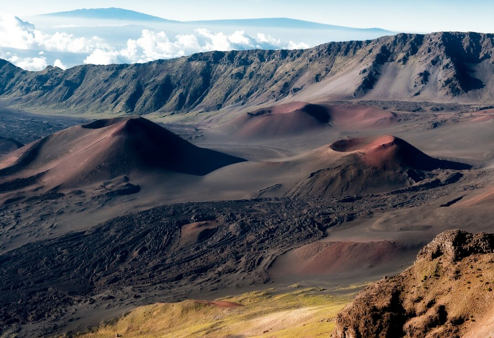
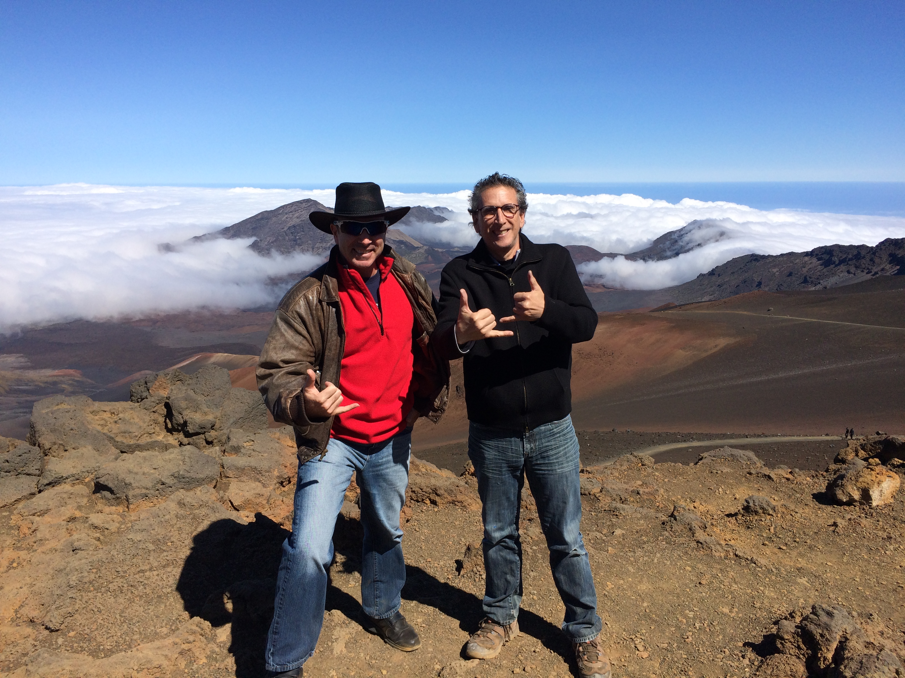
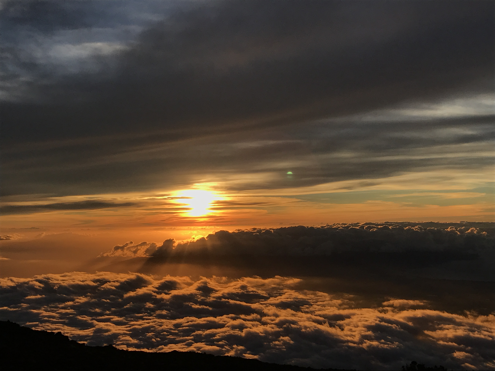

Haleakalā in Half a Day
A realistic plan for seeing the crater from Wailea: how long the drive takes, three ways to time it, and what to know before you start climbing.
It is a long half day, about seven hours door to door, and the drive is half the experience.

How Long It Really Takes
The summit road climbs from sea level to 10,023 feet, and the park's own directions put the drive at about three hours from Wailea, roughly two and a half from Kahului. Once you turn onto the park road, the last stretch is slow: steep switchbacks, wildlife on the pavement and plenty of places you will want to pull over.
That means a "half day" is really about seven hours: two to three hours up, an hour or so at the top, and the same coming down. It fits neatly into a morning or an afternoon, but not into a short gap between other plans.
Pick the Half Day That Fits You
1. The Sunrise Run
The classic, and the most demanding. Entering the park between 3:00 and 7:00 a.m. requires a separate sunrise reservation from recreation.gov, which costs $1 per vehicle on top of the regular entrance fee. Reservations open up to 60 days ahead, and a portion of each day's tickets is released at 7:00 a.m. Hawaiʻi time two days before. They cannot be refunded or exchanged for weather, so check the forecast before you commit. Plan to leave Wailea in the middle of the night, then be back at the coast by mid-morning.
2. The Late-Morning Climb
The easiest option for most families. No sunrise reservation is needed after 7:00 a.m., and you see the crater in full daylight. Leave Wailea in the morning so you reach the summit before the Haleakalā Visitor Center closes at noon, and be home by mid-afternoon.
3. The Sunset Trip
No sunrise reservation is required, and the light on the crater is lovely in the last hours of the day. The catch is the drive home: you will descend after dark on a winding road with wildlife on it, in the cold. Check our sunset times page, leave with a full tank and warm layers, and give yourself a generous buffer.

The Stops Worth Making
You will not have time for everything. These are the stops that reward a half day, in the order you will reach them.
Park Headquarters Visitor Center
At about 7,000 feet, inside the park entrance. Restrooms, exhibits and hiking information, open 8:30 a.m. to 4:30 p.m.
Leleiwi and Kalahaku Overlooks
Leleiwi, around 8,800 feet, gives you the first look into the crater. Kalahaku, around 9,300 feet, overlooks a garden of silversword plants, a plant found only in Hawaiʻi. Stay on the paved path.
Haleakalā Visitor Center
At about 9,740 feet, with restrooms and exhibits. It is open from sunrise to noon.
Puʻu ʻUlaʻula (Red Hill)
The true summit at 10,023 feet, and the best place to see over the cloud layer when conditions are clear.
Cost, Cold & Altitude
The entrance fee.
A private vehicle pays $30, valid for three days, and the fee covers everyone inside. Visitors on foot or bicycle pay $15 per person age 16 and over; youth 15 and under are free. The same ticket covers both the summit and the Kīpahulu district near Hāna.
It is much colder than the coast.
Expect the summit to run 30 to 40 degrees cooler than Wailea, with wind on top of that. Bring a real jacket, long pants and closed shoes, even on a hot beach day.
The altitude is real.
Some visitors feel lightheaded or short of breath at 10,000 feet. Drink water, move slowly, and turn around if you feel unwell. Scuba divers should wait at least 24 hours after diving before going to altitude.
There is no food in the park.
Stores and services are at least half an hour away. Pack water and snacks for the whole trip.
Closures happen quickly.
The park can close for wind, snow, lightning or storm damage with little notice. Check nps.gov/hale the morning you go.
Midday sun flattens the crater. The reds and browns come alive in low light, so the early or late plans photograph best.
What to know before you go.
Can you really see Haleakalā National Park in half a day from Wailea?
Yes, but it is a long half day. The park puts the drive to the summit at about three hours from Wailea, so plan roughly seven hours door to door, with an hour or so at the top.
How much does it cost to enter?
A private vehicle pays $30, valid for three days, and the fee covers everyone in the vehicle. Visitors on foot or bike pay $15 per person age 16 and over; youth 15 and under are free.
Do I need a reservation for midday or sunset?
No. The separate sunrise reservation applies only to entering between 3:00 and 7:00 a.m. Midday and sunset visits need only the regular entrance fee.
Where is the last gas station?
Pukalani is the last place to buy gas. There are no gas stations or EV chargers in the park.
What is the highest point in the park?
Puʻu ʻUlaʻula, also called Red Hill, is the summit at 10,023 feet. The Haleakalā Visitor Center sits a little lower at about 9,740 feet.
Sources. NPS: Fees · NPS: Sunrise reservations · NPS: Directions · NPS: Visitor centers · Hawaii Guide: Haleakalā summit drive. Fees, hours and reservation rules change, so confirm with the park before you go.